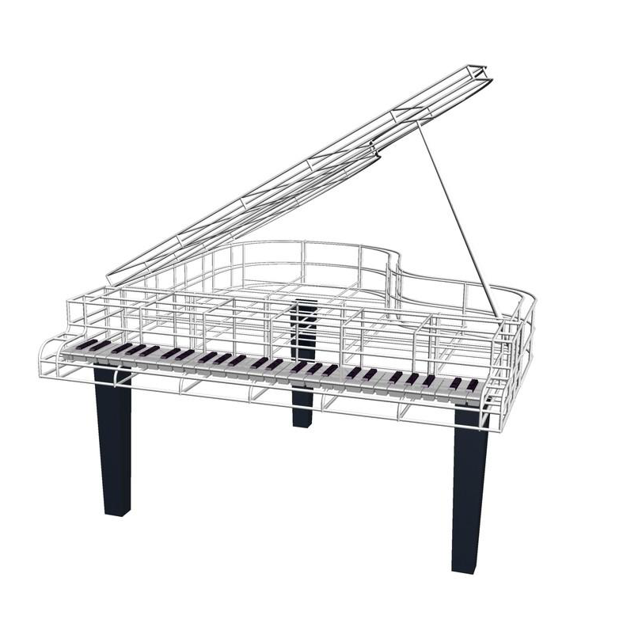
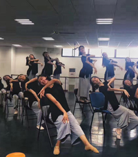
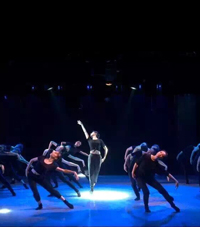
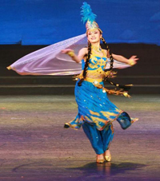
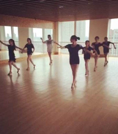
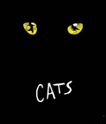

王思文
wang siwen
Gravure sans original, qu'il faut, c'est la vie
雕刻无须独创，它需要的是生命
Pina Bausch, la mère de la danse contemporaine
Pina Bausch. Pina a changé la manière de s’exprimer avec le langage corporel, en utilisant toutes les expressions et moyens de performance possibles dans l'espace scénique, en explorant les performances dramatiques des acteurs en accord avec des environnements remplis de terre, de fleurs ou de tables et de chaises. Elle a défini sa création comme étant du style "danse-théâtre", elle relie le ballet classique avec la danse moderne et combine la danse et le théâtre.
Les caractéristiques suivantes résument la performance scénique de Pina Bausch.
Premièrement, son installation scénique est très différente de ce à quoi nous sommes habitués. Si le drame fait référence à un ensemble de performances scéniques incluant acteurs, personnages, scénarios, lignes et actes, alors le théâtre fait référence à toutes les performances qui peuvent se produire sur la scène. Ici la scène se déroule dans un environnement particulier où les acteurs sont affectés par l'environnement et leurs mouvements se déforment et se métamorphosent: l'environnement de la danse-théâtre peut être un café rempli de chaises (comme dans «Café Müller»), un site couvert de terre (comme dans «Le Sacre du printemps»), ou des jardins remplis de fleurs aux couleurs vives (comme dans «Les Œillets»).
Sa «danse-théâtre»
Deuxièmement, contrairement à un théâtre de danse typique, la danse-théâtre de Pina Bausch n'a pas de scénario ni d'histoire. Les acteurs jouent leur propre rôle, les acteurs sur la scène ouvrent également la bouche pour parler, mais les lignes appartiennent entièrement à chaque acteur dans le sens qu’elles sont le contenu de leur propre vie privée, c’est l’expression de leur propre état d'esprit et de leur humeur. En général, le concept de «danse-théâtre» implique non seulement l'utilisation de toutes les représentations théâtrales, intégrant un mode de théâtre complet réunissant la performance des arts visuels et même de la littérature, mais il s'étend également à l’exploration du corps des danseurs et de l'espace scénique pour définir le théâtre corporel; il souligne une toute nouvelle expression du corps dans des expériences formelles et constantes, impliquant également des sujets sociaux et mettant l’accent sur l'observation, l'interrogation et la construction des personnes elles-mêmes.
Les danseurs contemporains de Chine soutiennent le fait que la «danse-théâtre» est une forme de mouvement développée par le réalisateur par la recherche et la réflexion répétées, l'accumulation d'expériences et de mémoires de la vie, l'exagération de la performance sur la scène. Elle porte l’esprit sur "l’expérience" et "la tolérance", de sorte que la performance du corps soit le noyau de l’intégration d'une variété d'éléments théâtraux, pour en faire un espace inclusif où surviennent un ensemble de comportements qui s’étendent richement au-delà de la danse.
Pendant des décennies, le concept créatif de «danse-théâtre» a eu un puissant impact sur le monde et a révolutionné la danse contemporaine et le théâtre.
-
«Sonate pour piano en sol mineur»
—Clementi
-

«Chants en do mineur»
—Bach
-
«Cinquième "Nocturne"»
—John Field
-
«Printemps»
—Bach
Clementi - «Sonate pour piano en sol mineur» («Piano Sonata in G Minor») Clementi (Muzio Clementi, 1752-1832)
La «Sonate pour piano en sol mineur» est un chef-d'œuvre de piano tardif du compositeur Muzio Clementi, dont les traits principaux et l'expression émotionnelle dramatique signalent l'arrivée du romantisme. La Sonate pour piano dans la création musicale de Clementi occupe une place très importante, mais représente aussi une pièce importante dans l'histoire de l'art du piano.
«Chants en do mineur» («Solfèges en do mineur») Bach- C.P.E Bach (H 220, Wq 117.2)
John Field - Cinquième "Nocturne"
Célèbre pianiste et compositeur irlandais. Premier musicien romantique dans l'histoire de l’art du piano, mais aussi premier à utiliser la forme musicale Nocturne sur le piano. Sa mélodie est belle, elle reflète la forme sincère d'émotions simples et élégantes. Ce nocturne est le cinquième, l’un des plus célèbres de tous.
Bach «Printemps» W.F. Bach
Wilhelm Friedemann Bach (1710-1784), il est le fils aîné de Johann Sebastian Bach (Jean-Sébastien Bach), ses œuvres sont magnifiques et harmonieuses, incluant principalement les concertos, sonates, fantaisies, fugues, etc. L’œuvre pour piano «Printemps» est d’une structure trilogique unique, elle dépeint une belle image du printemps, où toute chose s’éveille.

«Mademoiselle chante le blues»
«Chine, je t'aime»
Cette chanson a été composée en 1979 par le parolier Qu Cong et le compositeur Zheng Qiufeng. Bien que ses paroles soient simples et sans prétention, elles renferment une passion émouvante qui exprime l'affection infinie de la diaspora chinoise à la mère patrie. Chaque fois que cette chanson est entonnée, c’est le jaillissement d'une passion qui se déverse qui peut être ressenti, rendant chaque cœur du peuple chinois capable de vibrer avec l'amour noble de la patrie.
«Ma profonde affection vous attend»
Structure musicale: C'est une chanson avec une structure en forme de trilogie, le lyrisme est la caractéristique la plus importante de l'œuvre.
Prélude: il est composé de 12 sections. En ce qui concerne la mélodie, la progression binaire est utilisée principalement, la mélodie inquiétante mais touchante donne la voie à de profondes émotions pleines d’affection. En ce qui concerne le rythme, la seizième note est utilisée principalement en continue, combiné avec le triplet musical, les sept temps rythmiques et d’autres types de rythme segmentées et irréguliers, pour donner à la musique de la dynamique et de la fluidité. La chanson exprime l'amour et la nostalgie de la patrie.
«Été»
Le vingtième siècle aux États-Unis ouvre une nouvelle ère dans laquelle le jazz, qui a tiré son essence et s’est développé sur cette terre, affronte ou engloutit la musique permanente et fière des Européens. Gershwin, en tant que représentant des musiciens américains autochtones, a créé une musique très "américanisée". «Rhapsody in Blue» est un exemple réussi composé par Gershwin combinant le jazz et la symphonie. Son opéra «Porgy and Bess» est considéré comme "l'opéra le plus significatif écrit par les Américains". «Summertime» est devenu son standard en chanson, elle a été interprétée dans différents styles musicaux. Gershwin a utilisé du jazz, du blues et de l’afro-soul ainsi que d'autres styles. Bien que de nombreux musiciens américains autochtones essaient également d'intégrer cette "musique populaire" dans la création de musique sérieuse, personne n'a autant de succès que Gershwin. «Porgy and Bess» est considéré comme un opéra moderne, il diffère de l'opéra traditionnel en vogue antérieurement.
«Oh mon papa chéri»
«Oh mon papa chéri» est une aria extraite de l'opéra «Gianni Schicchi» de Puccini, dont l'histoire est basée sur la Divine Comédie de Dante. C'est le dernier acte dans Le Triptyque (Il trittico) de Puccini, la chanson la plus célèbre de l’opéra est l'aria de soprano «Oh mon papa chéri» («O Mio Babbino Caro»), elle est apparue plusieurs fois dans des films et autres œuvres artistiques. Le contenu est une femme qui supplie son père de la laisser courir après son amour; la mélodie est belle, profonde et émouvante.
Romance «Quand j'm'en vais»
L’opera «La Bohème» de Giacomo Puccini s’ouvre principalement sur l'amour de deux jeunes gens; deux types d'amour s’entrelacent, passionnent, favorisent le développement continu du scénario et soulignent l'effet dramatique de l'opéra. «Quand j'm'en vais» est tiré du deuxième acte de la «Valse de Musetta».
«And Then There Were None»
Sentiments personnels: Agatha Christie est connue comme "la reine du roman policier dans le monde".
La pièce insiste sur le «retour au classique», fidèle au scénario d'Agatha, et s'efforce de donner une image vraie et touchante sur la scène, identique aux écrits d'Agatha. Toute la pièce insiste sur la mise en évidence des éléments les plus fondamentaux de l'art dramatique: l'art des acteurs et des spectateurs. La scène restaurera également le style de performance réaliste dans l'arène britannique, afin que le public puisse expérimenter l'acte par des représentations théâtrales vivantes et sensorielles, les immergeant complètement dans le suspense. En créant une atmosphère de suspense, «Dix petits nègres» révèle le style oriental de l'esthétique d’horreur et de terreur, atteint le niveau psychologique, conduit les spectateurs vers un monde inconnu et un destin inconnu dans l’univers du thriller. Mansion en panne d'électricité, violente averse à l’extérieur, tonnerre et foudre, lumières (tremblantes) des chandelles, musique étrange, cinq survivants se suspectant ... ... effrayé, le public crie sous l’épouvante ...
«Épouses et Concubines» (Wives and Concubines)
Chine en 1920. Dans un monde ravagé par la guerre, des femmes extrêmement tristes survivent. C’est un groupe de trois femmes dans un état pitoyable, sous l'oppression patriarcale et l'éthique féodale (sous le régime de la polygamie), qui pour survivre dans une grande mansion ont prétendu connaître leur oppresseur pour éliminer tout doute de sa part, pour ensuite l’embusquer et lui faire du mal afin de maintenir leur position stable......
«Homme et Faune sauvage»
Le drame (la pièce de théâtre) «Homme et Faune sauvage» («Man and Wilderness») raconte l’histoire d'amour poignante d'un groupe de travailleurs de la récupération qui ont consacré leur jeunesse au "Great Northern Wilderness" (Grand Nord Sauvage) : Ma Zhaoxin, refusant d'accepter le fait que sa petite amie Xi Cao ait été violée, l’a personnellement donnée en mariage à un cocher; Ning Shanshan s’est sacrifiée héroïquement en remplaçant son bienaimé Su Jiaqi au champ de bataille; de la même manière, Li Tiantian qui est (aussi) amoureuse de Su Jiaqi, finit par être engloutie par des marais fous. Cette pièce théâtrale montre l'obstination et la tragédie des hommes face au destin, l'estime de soi et l'infériorité des hommes face à la nature, la confrontation et le compromis entre les hommes et leurs faiblesses inhérentes;
-

«Je t'attends»
-

«Danseur solitaire»
-

«La saison des récoltes»
-

«Paysage»
Danse dramatique «Je t'attends»
Vidéo diffusée lors de la soirée de remise des diplômes
A cause de la guerre, des soldats sont allés se battre en première ligne, il n’y a aucun moyen pour eux de se réunir avec leurs familles. La danse raconte l’histoire des femmes de soldats qui attendent que les soldats rentrent à la maison; face à plus de solitude que de retrouvailles, elles portent résolument le fardeau de la famille, en attendant le retour en toute sécurité des soldats ...
Danse moderne «Danseur solitaire»
Pièce d’examen final
La danse est effectuée sur fond de la chanson «Piazzolla Libertango» (Cello.Piano) pour décrire abstraitement l'expression de la libération du stress et des émotions enfouis dans le cœur du danseur.
Danse folklorique chinoise «La saison des récoltes»
Vidéo diffusée lors de la soirée de remise des diplômes
Description: En automne, quand la moisson est arrivée, un groupe ethnique de filles ouïgoures récoltent avec joie les fruits de la vigne, elles célèbrent la moisson ensemble avec des soldats, tout le monde est heureux, il n’y a plus de moi, ni de toi, l’identité et le rang de chacun n’ont plus d’importance.
Danse folklorique chinoise: «Paysage»
La vidéo diffusée lors de la soirée de remise des diplômes montre la danse folklorique chinoise de la minorité ethnique Zhuang, elle reflète l'enthousiasme et la vitalité des enfants qui grandissent dans le pays, elle montre le magnifique paysage du pays natal de la minorité ethnique Zhuang; dans le même temps à travers le paysage charmant, sont exprimés le caractère rustique et l'enthousiasme lié au caractère ethnique du peuple Zhuang. Elle permet aux spectateurs non seulement d'apprécier la beauté visuelle apportée par la danse, mais aussi de percevoir les coutumes et la culture ethnique du peuple Zhuang.
-

«Cats»
-
«MAMA MIA»
-
«Chicago»
«Cats» («Les Chats»)
«Cats» («Les Chats») est une comédie musicale du compositeur britannique Andrew Lloyd Webber, basée sur un poème de T. S. Eliot. Depuis sa première représentation à Londres en 1981, elle est devenue la plus célèbre comédie musicale jusqu’à ce jour. L’une de ses fameuses chansons "Mémoire" ("Memory"), est largement diffusées dans le monde entier. «Cats» («Les Chats») est la pièce (théâtrale) la plus rentable au monde et la série la plus longue sur Broadway à New York et le West End à Londres.
«MAMA MIA»
«Cats» («Les Chats») est une comédie musicale du compositeur britannique Andrew Lloyd Webber, basée sur un poème de T. S. Eliot. Depuis sa première représentation à Londres en 1981, elle est devenue la plus célèbre comédie musicale jusqu’à ce jour. L’une de ses fameuses chansons "Mémoire" ("Memory"), est largement diffusées dans le monde entier. «Cats» («Les Chats») est la pièce (théâtrale) la plus rentable au monde et la série la plus longue sur Broadway à New York et le West End à Londres.
«Chicago»
Adapté de la pièce «Chicago» de Maurine Dallas Watkins, basé sur de vrais faits de meurtres et procès survenus dans la région de Chicago à la fin des années 1920.
Sentiments personnels: Dans les années 1970, la pièce «Chicago» était unique sur la scène de Broadway en raison de sujets sombres et de mises en scène très audacieuses. Le film est une adaptation de la version scénique de la comédie musicale, la pièce théâtrale est plus dramatique, cette forme d'art détermine le fait que la musique représente "l’âme" de «Chicago», et la danse en est "le squelette". L'utilisation de la technique du "montage" dans le film permet ingénieusement à l'histoire de passer de la réalité à l’imaginaire; le jeu scénique utilise plus de symboles et la combinaison réaliste de (différentes) méthodes; l'une des principales caractéristiques de la comédie musicale «Chicago» est "l'américanisation", qui est une combinaison d'un grand nombre d'expressions artistiques populaires aux États-Unis au début du siècle dernier. Les compositeurs utilisent largement la musique Jazz dans la pièce, en particulier celle des premiers «Sir Ragtime», dont les chansons sont temporellement sautillantes, mélodiques, avec une tendance d’ "opérationnalisation" dans une comédie musicale opposée à celle de Broadway.